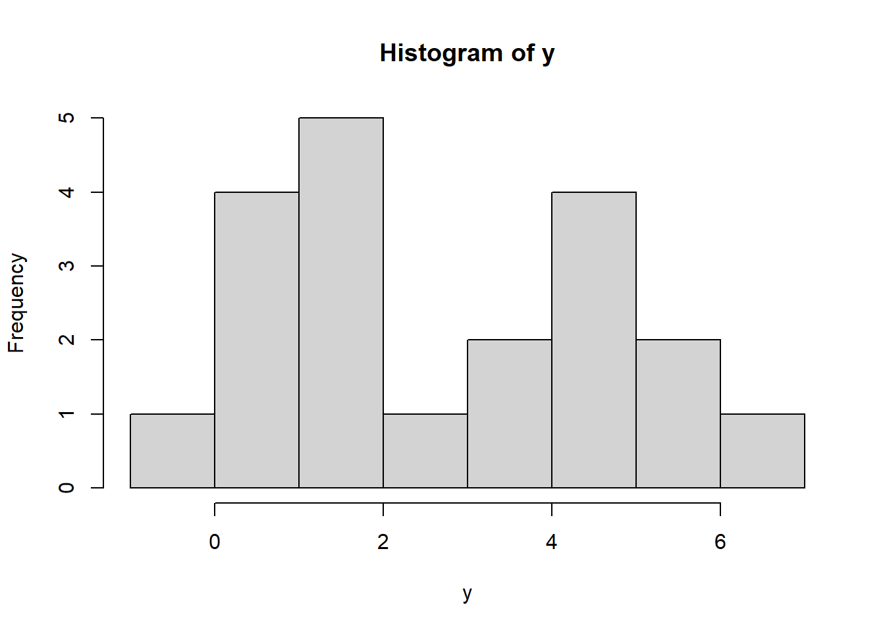

Note 2 Hierarchical Model, Mixture Distribution（階層モデル、混合分布）
2026-4-22
2.2 Mixture Distributionの定義
例： Normal scale mixture distribution (現 pp.65)
例： Binomial-Poisson Hierarchy
- 分布と期待値
例： Poisson-Gamma distribution (課題 \(\rightarrow\) 4.32)
例： Noncentral \(\chi^2\) distribution
例： Beta-binomial Hierarchy
2.2.2 EM algorithm (pp.327、現代数理統計の基礎 pp.263)
例： Multiple Poisson rates
定理*
EM vs MLE*
Missing data issue*
Kullback–Leibler (KL) divergence: \(KL(Q||P)\) - a measure of how much an approximating probability distribution \(Q\) is different from a true probability distribution \(P\) (現代数理統計の基礎 pp.195)
Newton-Raphson method (現代数理統計の基礎 pp.262)
応用
GLMM: generalized linear mixed effects model（一般化線形混合モデル）
- その特例： GLM
- その一般化： Bayesian hierarchical model、階層ベイズ
- Meta-analysis データの統合
Bayes analysis (pp.371)
- Empirical Bayes analysis
- Hierarchical Bayes analysis
- Gibbs sampling
EM
- 混合分布の推定 (現代数理統計の基礎 pp.264 例11.4)
- 分類モデル
2.3 R experiment
Suppose \(X\sim N(\mu, 1)\), where \(\mu\) is unknown.
The observable data are \(\{0,2,x\}\), where \(x\) indicates the missing value.
We can use the following EM algorithm to find \(\hat\mu\)
mu <- 2 ## Initial value
tol <- 1e-6 ## Difference between mu_new and mu
diff <- Inf ## set some very large value as initial difference
while (diff > tol) { ## If difference is SMALLER than some very small value, then stop
mu_new <- (0 + 2 + mu) / 3
diff <- abs(mu_new - mu)
mu <- mu_new
print(mu)
}## [1] 1.333333
## [1] 1.111111
## [1] 1.037037
## [1] 1.012346
## [1] 1.004115
## [1] 1.001372
## [1] 1.000457
## [1] 1.000152
## [1] 1.000051
## [1] 1.000017
## [1] 1.000006
## [1] 1.000002
## [1] 1.000001
## [1] 1Because:
Loglikelihood of \(\{0,2,x\}\): \(log L(\mu|x)\propto -\dfrac{1}{2}\{(0-\mu)^2+(2-\mu)^2+(x-\mu)^2\}\), where we omit all the constants.
\(E_{X|\mu'}[log L(\mu|X)]\\\propto E_{X|\mu'}[-\dfrac{1}{2}\{(0-\mu)^2+(2-\mu)^2+(X-\mu)^2\}]\\=-\dfrac{1}{2}\{(0-\mu)^2+(2-\mu)^2+E_{X|\mu'}[(X-\mu)^2]\}\\=-\dfrac{1}{2}\{(0-\mu)^2+(2-\mu)^2+E_{X|\mu'}[X^2-2X\mu+\mu^2]\}\\=-\dfrac{1}{2}\{(0-\mu)^2+(2-\mu)^2+E_{X|\mu'}[X^2]-2E_{X|\mu'}[X]\mu+\mu^2]\}\\=-\dfrac{1}{2}\{(0-\mu)^2+(2-\mu)^2+(1+\mu'^2)-2\mu'\mu+\mu^2]\}\)
Maximum \(E_{X|\mu'}[log L(\mu|X)] \Rightarrow \mu = \dfrac{0+2+\mu'}{3}\)
Set an initial value for \(\mu'\) and derive \(\mu\) until \(\mu=\mu'\)
2.3.1 Gaussian Mixture Model
Suppose we observed some scores from 2 groups (e.g. \(N(\mu_1, \sigma_1^2), N(\mu_2, \sigma_2^2)\)). However we could not observe the group variable.
Data look like this
y <- c(-0.39, 0.12, 0.94, 1.67, 1.76, 2.44, 3.72, 4.28, 4.92, 5.53,
0.06, 0.48, 1.01, 1.68, 1.80, 3.25, 4.12, 4.60, 5.28, 6.22)
hist(y) ## this is the histogram (empirical distribution) of data
Suppose \(Z_i\) is the latent group variable (unobservable), where \(P(Z_i=0)=1-\pi, P(Z_1=1)=\pi\).
\(Y_i|Z_i=0\sim N(\mu_1, \sigma_1^2)=\phi(y| \mu_1,\sigma_1); Y_i|Z_i=1\sim N(\mu_2, \sigma_2^2)=\phi(y| \mu_2,\sigma_2)\)
Then the marginal pdf of \(Y\): \(f_Y(y)=(1-\pi)\phi(y| \mu_1,\sigma_1)+\pi\phi(y| \mu_2,\sigma_2)\)
Likelihood function is
\(L(\pi,\mu_1,\sigma_1,\mu_2,\sigma_2) = \prod_{i=1}^N (1-\pi)\phi(\mu_1,\sigma_1|y_i)+\pi\phi(\mu_2,\sigma_2|y_i)\)
We could use MLE to estimate the parameters \((\pi,\mu_1,\sigma_1,\mu_2,\sigma_2)\) but the derivation is complicated.
Consider the EM algorithm.
## EM
par <- c(0.5, 0.5, 1, 0.5, 1) # Initial values of (pi, mu1, mu2, sigma1, sigma2)
tol <- 1e-6
diff <- Inf ## set some very large value as initial difference
while (diff > tol) { ## If difference is SMALLER than some very small value, then stop
pi <- par[1]
mu1 <- par[2]
mu2 <- par[3]
sigma1 <- par[4]
sigma2 <- par[5]
## ---- E-step ----
f1 <- dnorm(y, mu1, sigma1) ## density of normal distribution
f2 <- dnorm(y, mu2, sigma2)
gamma <- pi * f2 / ((1 - pi) * f1 + pi * f2)
## ---- M-step ----
pi_new <- mean(gamma)
mu1_new <- sum((1 - gamma) * y) / sum(1 - gamma)
mu2_new <- sum(gamma * y) / sum(gamma)
sigma1_new <- sqrt(sum((1 - gamma) * (y - mu1_new)^2) / sum(1 - gamma))
sigma2_new <- sqrt(sum(gamma * (y - mu2_new)^2) / sum(gamma))
par_new <- c(pi_new, mu1_new, mu2_new, sigma1_new, sigma2_new)
diff <- max(abs(par_new - par))
par <- par_new
print(par)
}## [1] 0.7917954 0.5145683 3.2424594 0.6175192 1.8334415
## [1] 0.7748397 0.5053740 3.3048255 0.6443795 1.7987616
## [1] 0.7581902 0.5220838 3.3609706 0.6618082 1.7733351
## [1] 0.7417462 0.5507235 3.4139353 0.6796016 1.7525038
## [1] 0.7248425 0.5860673 3.4672900 0.6985004 1.7333679
## [1] 0.7070685 0.6246028 3.5237523 0.7171250 1.7135983
## [1] 0.6884240 0.6631897 3.5848054 0.7341643 1.6911693
## [1] 0.6691994 0.6995139 3.6507809 0.7489805 1.6645029
## [1] 0.6497662 0.7325107 3.7212615 0.7615600 1.6325873
## [1] 0.6304189 0.7622586 3.7955454 0.7722342 1.5949333
## [1] 0.6113197 0.7895422 3.8729659 0.7814431 1.5514097
## [1] 0.5925224 0.8154014 3.9530020 0.7896150 1.5020684
## [1] 0.5740318 0.8408185 4.0352085 0.7971317 1.4470526
## [1] 0.5558715 0.8665397 4.1190183 0.8043363 1.3866385
## [1] 0.5381460 0.8929716 4.2034645 0.8115575 1.3214258
## [1] 0.5210904 0.9201074 4.2868798 0.8191326 1.2526730
## [1] 0.5050933 0.9474804 4.3666894 0.8273952 1.1827099
## [1] 0.4906634 0.9741860 4.4395228 0.8365804 1.1151910
## [1] 0.4783186 0.9990135 4.5018803 0.8466371 1.0547076
## [1] 0.4684164 1.0207253 4.5512903 0.8570819 1.0054019
## [1] 0.4609985 1.0384653 4.5873594 0.8671140 0.9691598
## [1] 0.4557639 1.0520661 4.6118786 0.8759542 0.9448926
## [1] 0.4522186 1.0619743 4.6277846 0.8831343 0.9296435
## [1] 0.4498699 1.0689291 4.6378960 0.8885794 0.9203204
## [1] 0.4483287 1.0736883 4.6443092 0.8925017 0.9146223
## [1] 0.4473203 1.0768919 4.6483999 0.8952300 0.9110956
## [1] 0.4466609 1.0790265 4.6510282 0.8970857 0.9088795
## [1] 0.4462295 1.0804400 4.6527277 0.8983306 0.9074686
## [1] 0.4459470 1.0813727 4.6538316 0.8991586 0.9065615
## [1] 0.4457620 1.0819866 4.6545512 0.8997065 0.9059744
## [1] 0.4456407 1.0823903 4.6550211 0.9000679 0.9055927
## [1] 0.4455612 1.0826554 4.6553285 0.9003058 0.9053437
## [1] 0.4455091 1.0828295 4.6555298 0.9004622 0.9051810
## [1] 0.4454749 1.0829438 4.6556617 0.9005649 0.9050745
## [1] 0.4454525 1.0830188 4.6557481 0.9006324 0.9050048
## [1] 0.4454378 1.0830680 4.6558048 0.9006766 0.9049591
## [1] 0.4454282 1.0831003 4.6558420 0.9007057 0.9049292
## [1] 0.4454218 1.0831214 4.6558664 0.9007248 0.9049095
## [1] 0.4454177 1.0831353 4.6558823 0.9007373 0.9048967
## [1] 0.4454150 1.0831444 4.6558928 0.9007455 0.9048882
## [1] 0.4454132 1.0831504 4.6558997 0.9007509 0.9048827
## [1] 0.4454120 1.0831543 4.6559042 0.9007544 0.9048791
## [1] 0.4454112 1.0831569 4.6559072 0.9007567 0.9048767
## [1] 0.4454107 1.0831586 4.6559091 0.9007582 0.9048751
## [1] 0.4454104 1.0831597 4.6559104 0.9007592 0.9048741
## [1] 0.4454102 1.0831604 4.6559112 0.9007599 0.9048734The detailed derivations of the parameters can be found online.
Continue with the model.
With the estimates, we have the marginal pdf of \(Y\): \(f_Y(y)=(1-0.4454)\phi(y| 1.0832,0.9008)+\pi\phi(y| 4.6559, 0.9049)\). (Attention: this is just the density, not the probability)
What we can do next is to predict the probabilities of a new point falling into each group.
Suppose a new point is observed as \(y_{new}=3\), we can derive \(f_Y(y_{new})\)
## [1] 0.4454102 1.0831604 4.6559112 0.9007599 0.9048734pi <- par[1]
mu1 <- par[2]
mu2 <- par[3]
sigma1 <- par[4]
sigma2 <- par[5]
f1 <- dnorm(y, mu1, sigma1)
f2 <- dnorm(y, mu2, sigma2)
fy <- (1-pi) * f1 + pi * f2
fy ## but this is not interesting## [1] 0.06232562The results we care about is the classification
\(P(Z=0 \mid y_{\text{new}}) = \dfrac{(1-\hat{\pi})\,\phi(y_{\text{new}} \mid \hat{\mu}_1,\hat{\sigma}_1)} {f_Y(y_{\text{new}})}\)
\(P(Z=1 \mid y_{\text{new}}) = \dfrac{\hat{\pi}\,\phi(y_{\text{new}} \mid \hat{\mu}_2,\hat{\sigma}_2)} {f_Y(y_{\text{new}})}\)
The probabilities of being classified into groups are shown as
## [1] 0.409503## [1] 0.590497